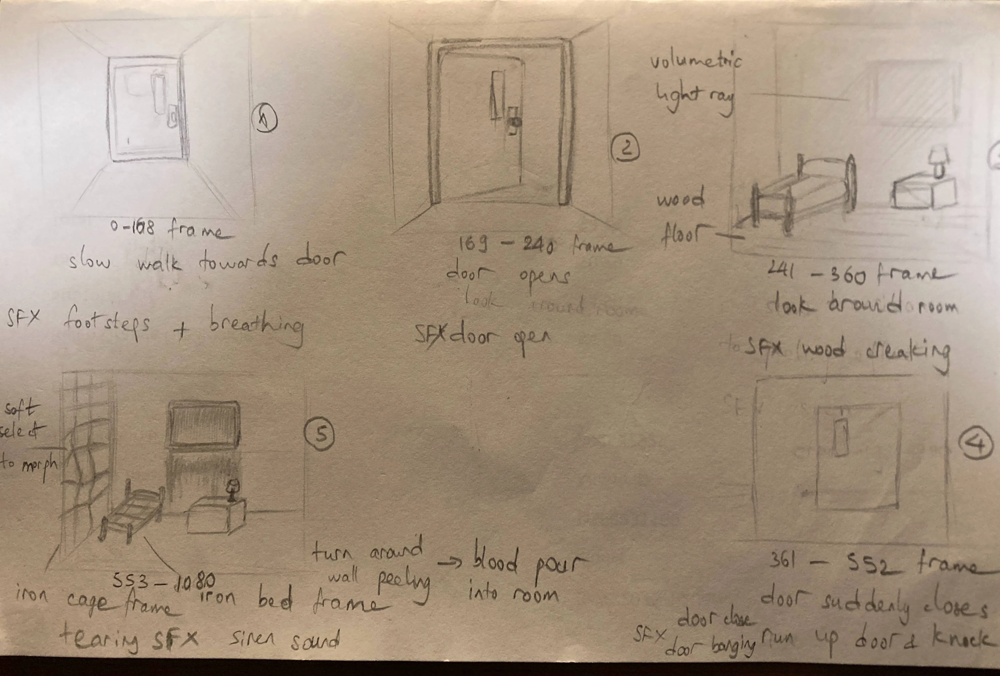

Project type:
3D CGI Motion Design in Blender and Premiere Pro.
Project description:
For this project, I created a short horror vignette in Blender—complemented by editing and compositing in Adobe Premiere—to demonstrate my proficiency in 3D modeling, lighting, animation, texturing, and motion design. Drawing inspiration from the atmospheric tension and iconic peeling‐wall effect of Silent Hill 2, I crafted an original “otherworld” sequence that reflects a protagonist’s descent into guilt and grief.
------------------
The narrative follows a husband who visits his wife in a hospital only to find her missing. Through a supernatural transition, the environment peels apart to reveal a blood-filled chamber, symbolizing his guilt over ending her suffering.
------------------
3D Modeling & Texturing: Custom assets— a rusty hospital door, distressed hospital beds, overturned lamp, cage—were modeled in Blender and textured to evoke decay and dread.
Lighting & Atmosphere: Dramatic contrast and strategic color shifts guide the viewer from a dimly lit bedroom into the crimson-tinted “hell” realm.
Animation & VFX: Utilizing Blender’s particle system, quick explode and cloth simulation, I implemented a peeling-wall effect, synchronized with camera movement to heighten immersion.
Motion Design: Subtle camera shakes, timed cuts, and compositing in Premiere enhance the cinematic flow.
Peer Feedback Integration: applied realistic fabric textures to the bedding, introduced dynamic on-off lighting to simulate a handheld flashlight search, and reinforced the sense of confinement by removing the window and door in the other world transition.
Date:
April 14 - May 12, 2025
Role:
VFX Artist, Animator, Texture Painter, and 3D Modeler.
Project highlight:
Storyboard:

Wall peeling effect Tutorial:
Concept:

.webp)
.webp)
Reflection:
This project was both creatively rewarding and technically challenging. I learned the importance of symbolic detail—such as pill bottles and a framed photograph—to reinforce the story, and plan to revisit the scene to incorporate these elements.
These are the challenges I encountered:
VFX Caching: My initial peeling‐wall simulation baked correctly one day, then became distorted the next. By iteratively tweaking the cache timing and geometry‐node settings, I ultimately achieved the intended effect.
Render Obstructions: A hidden camera-blocking cube caused the final output to appear uniformly gray despite proper lighting. Rediscovering and removing this object taught me to maintain a clear scene hierarchy and regularly check hidden elements.
Overall, this project deepened my understanding in Blender’s animation and rendering pipelines, and highlighted valuable lessons in troubleshooting complex simulations and ensuring consistency between viewport previews and final renders. These insights will directly inform my workflow on future real‐time and cinematic projects.